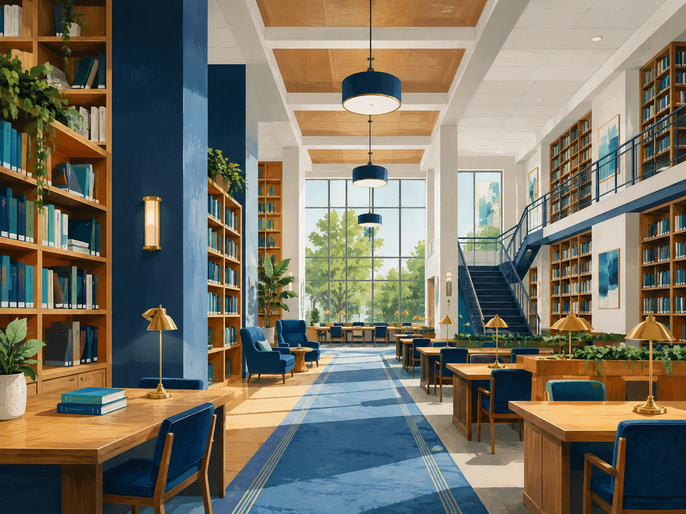

Estudo
Biblioteca Central
Bloco B, térreo · segunda a sexta, das 8h às 21h

Recursos disponíveis
- Mesas individuais e coletivas
- Computadores para consulta
- Empréstimo e devolução de livros
- Entrada acessível pelo corredor norte
Orientação de chegada
Clique no botão para exibir ou ocultar o trajeto detalhado.
Entre pelo portão principal, siga até o Bloco B e use a rampa do corredor norte. A biblioteca fica após a segunda porta à direita.